Overview
Designed, simulated, and analyzed five progressively complex RF structures in Ansys HFSS 2025 R2 — from guided-wave transmission lines through impedance matching networks to antenna arrays. Each simulation result was validated against my own analytical calculations from transmission-line theory, waveguide theory, and array factor analysis, building strong RF design intuition.
Lab 1 — Coaxial Cable
Achieved < −65 dB reflection across 1.5–4.5 GHz with a 50-Ω coaxial line I designed with polyethylene dielectric (εr = 2.2). Compared four solver/port configurations to understand their trade-offs:
- Driven Modal + Wave Port: S(1,1) below −65 dB across the band — negligible reflection with matched terminations.
- Driven Modal + Lumped Port: Identical insertion loss; subtle S(1,1) differences revealed port calibration effects.
- Driven Terminal solvers: Confirmed Modal and Terminal converge for TEM-mode coax, validating solver choice independence.
Characteristic impedance matched the 50 Ω target. The S(2,1) slope quantified frequency-dependent copper loss.
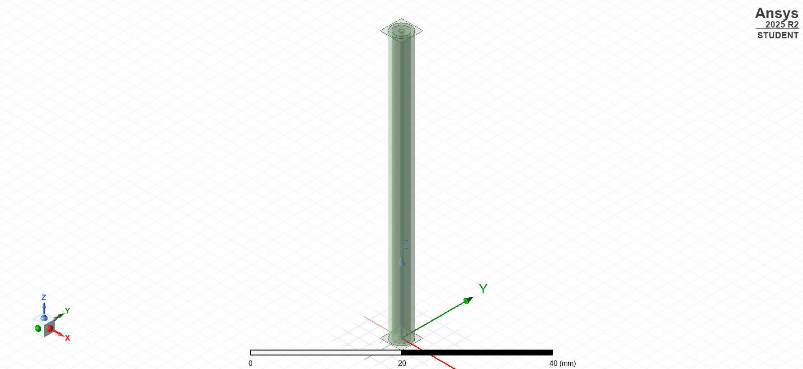
HFSS model of 50-Ω coaxial cable (5 cm length)
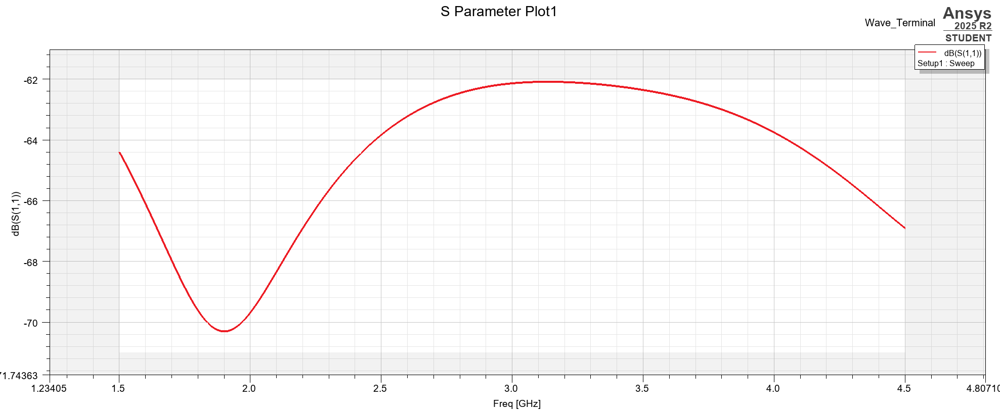
S(1,1) reflection coefficient — below −42 dB confirming matched 50-Ω line
Lab 2 — Rectangular Waveguide
Simulated an X-band waveguide (2.286 × 1.016 cm, 8.2–12.4 GHz) and confirmed single-mode TE10 propagation with < −35 dB return loss across the band — matching my analytical predictions for cutoff, guided wavelength, and wave impedance:
- Matched propagation: S(2,1) near 0 dB confirmed lossless transmission; S(1,1) well below −35 dB.
- E-field verification: Visualized TE10 field profile — maximum at a/2, zero at walls — exactly matching theory.
- Mismatch demonstration: Renormalizing Port 1 to 50 Ω produced the expected high reflection, illustrating impedance mismatch effects.
- Higher-order mode cutoff: Verified TE20 is below cutoff across the entire X-band, confirming single-mode operation.
- Attenuator design: Halving the broad dimension pushed TE10 cutoff above the operating band, producing strong attenuation.
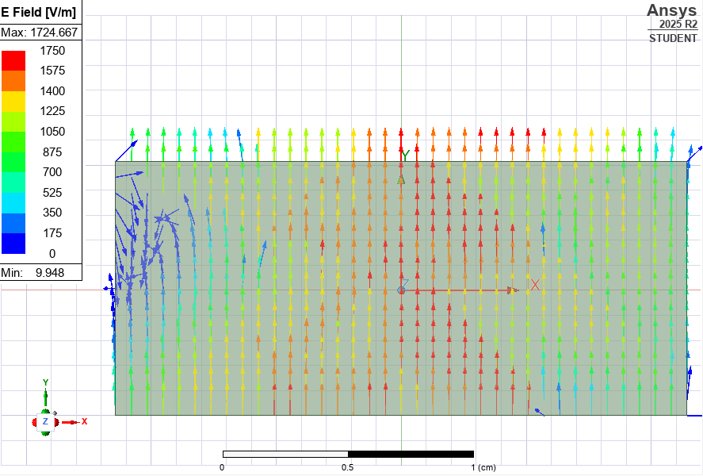
E-field vectors of the TE10 mode — maximum at a/2, zero at walls
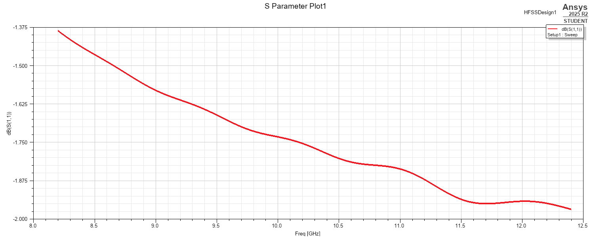
S(1,1) reflection coefficient across the X-band
Lab 3 — Microstrip Stub Tuning
Eliminated a 200-Ω-to-50-Ω mismatch (4.4 dB return loss) by designing single and double-stub matching networks on FR4 microstrip (εr = 4.4, 3.1 mm trace width) at 3 GHz. Both networks achieved deep return-loss nulls at the design frequency:
- Single-stub match: Placed a shunt open stub at the Smith-chart-derived location — produced a deep S(1,1) null at 3 GHz with periodic harmonic nulls confirming distributed behavior.
- Double-stub match: Achieved broader bandwidth and deeper return loss than the single stub, at the cost of a more complex layout.
- Analytical validation: Derived stub lengths and positions using Smith chart graphical methods, then cross-checked against closed-form MATLAB solutions before simulating in HFSS.
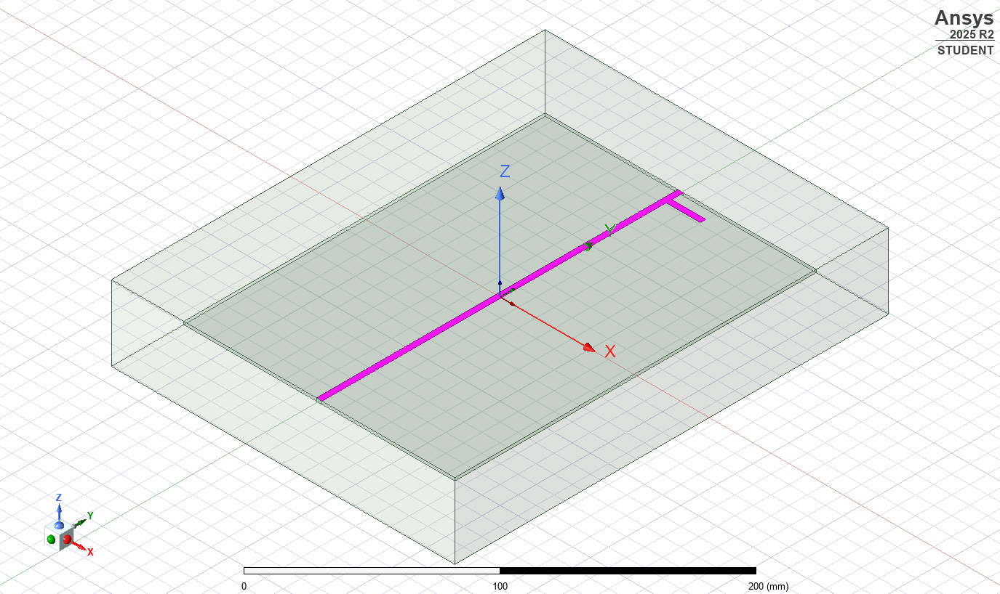
HFSS model of microstrip stub tuning network on FR4 substrate
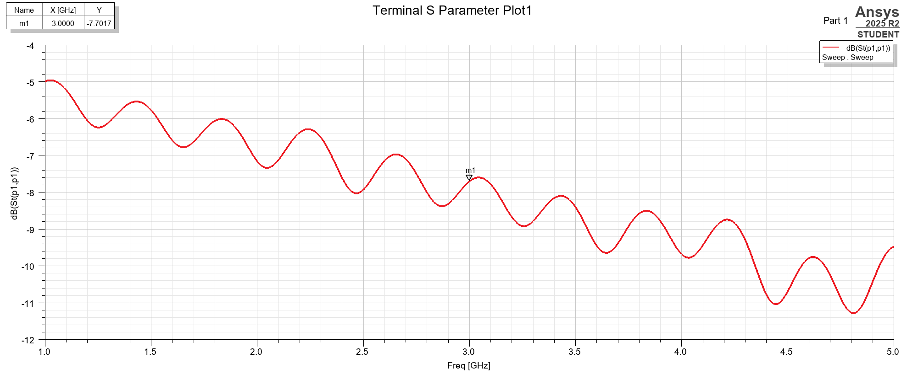
S-parameter response — periodic nulls confirm impedance match at harmonics
Lab 4 — Quarter-Wave Monopole Antenna
Designed a quarter-wave monopole at 2.2 GHz and improved its return loss from −16.7 dB to better than −20 dB by adding a coaxial quarter-wave transformer — achieving 5.06 dB directivity (near the 5.17 dB theoretical limit):
- Resonance tuning: Shortened the monopole to 30.5 cm to drive the reactive component to near zero, achieving −16.7 dB return loss that matched my hand calculations.
- 5.06 dB directivity: 3-D pattern confirmed the expected hemisphere radiation at θ = 90°, within 0.11 dB of the theoretical maximum.
- Finite ground plane: Replacing the infinite ground with a λ/2 copper disc revealed back-radiation and pattern distortion — quantifying real-world ground plane effects.
- Quarter-wave transformer: Designed a coaxial matching section that pushed return loss past −20 dB at the design frequency.
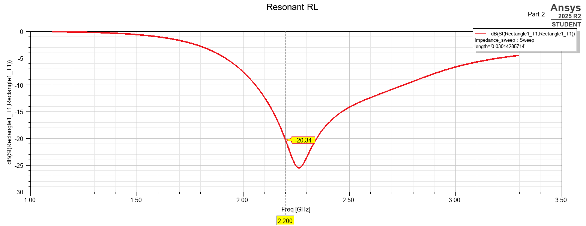
Return loss at resonance: −20.34 dB at 2.2 GHz
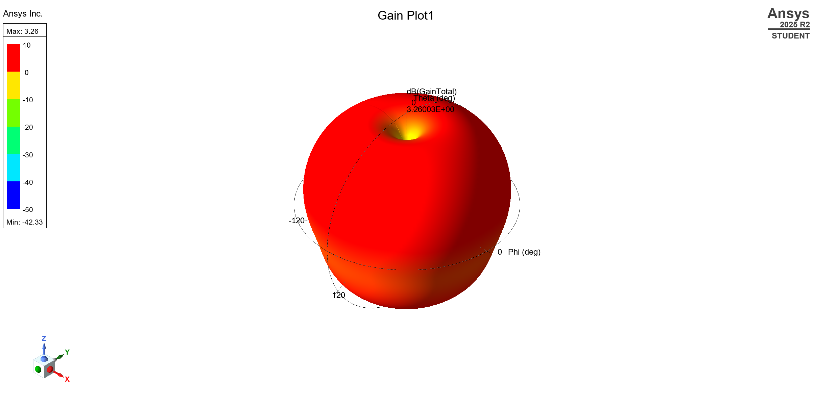
3-D gain pattern — 3.26 dB max, hemisphere radiation over ground plane
Lab 5 — Linear Antenna Arrays
Designed three 10-element linear arrays at 1 GHz (λ/4 spacing), achieving up to 16.06 dB directivity and −35 dB sidelobe suppression. Compared each architecture against my analytical array-factor predictions:
- Reference dipole: Tuned a half-wave dipole to 66 mm for near-ideal resonance (71.36 − j0.07 Ω) — this element fed all three arrays.
- Ordinary end-fire: Uniform excitation with progressive phase shift steered the main beam along the z-axis; directivity and HPBW matched array-factor theory.
- Hansen-Woodyard end-fire: Modified phasing boosted end-fire directivity beyond the ordinary case at the cost of slightly elevated sidelobes.
- Dolph-Chebyshev broadside: Non-uniform amplitude taper achieved the narrowest possible main beam for a −35 dB sidelobe constraint.
Exported each configuration as a custom HFSS array definition and compared simulated directivity, HPBW, and SLL against analytical predictions.
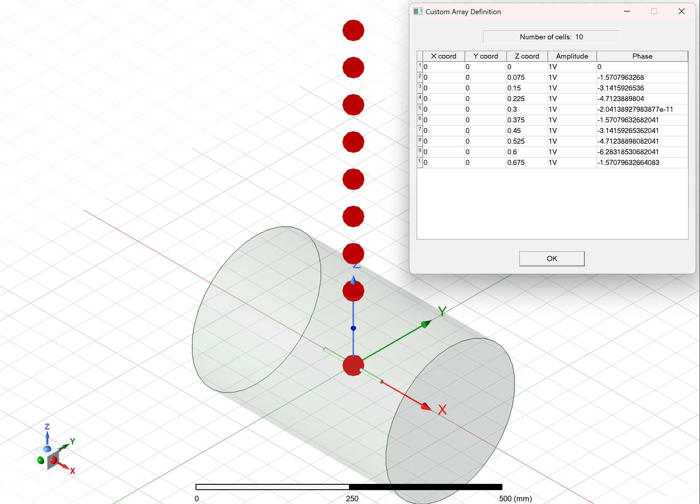
10-element linear dipole array with custom excitation amplitudes and phases
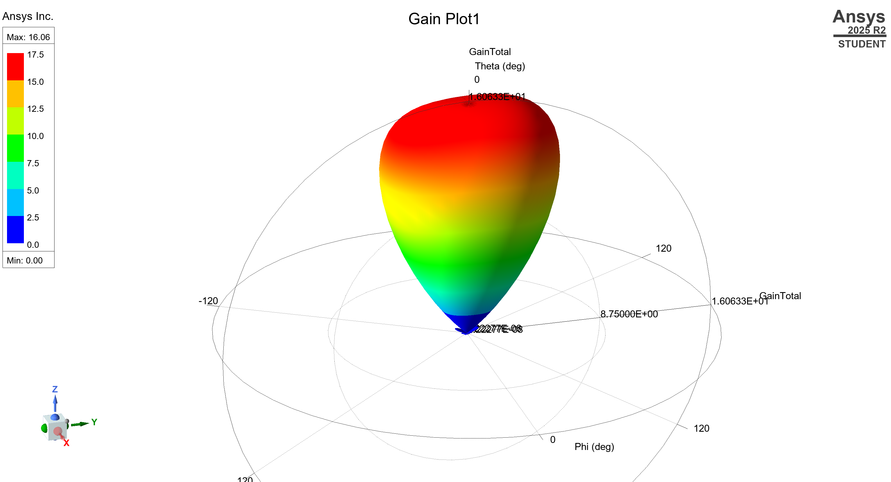
3-D gain pattern — 16.06 dB max, directed end-fire beam
Final — Microstrip Patch Antenna
Designed a rectangular microstrip patch antenna at 2.4 GHz as the course capstone. Modeled a coaxial probe feed on a grounded dielectric substrate with a radiation boundary, achieving 4.43 dB broadside directivity and resonance at 2.36 GHz.
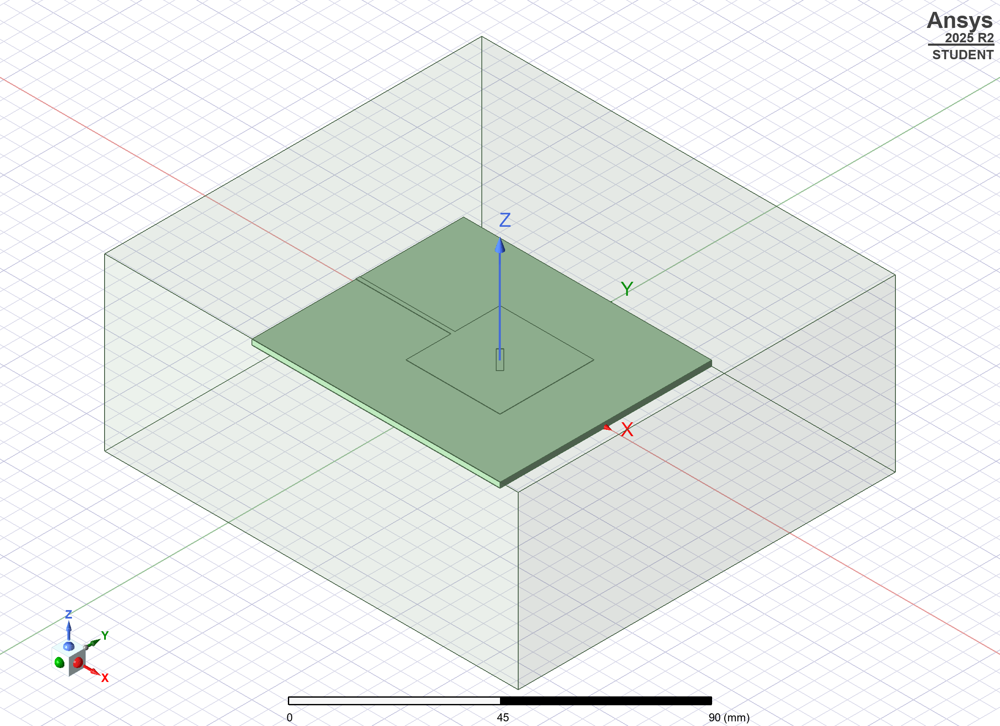
Microstrip patch antenna model with radiation boundary
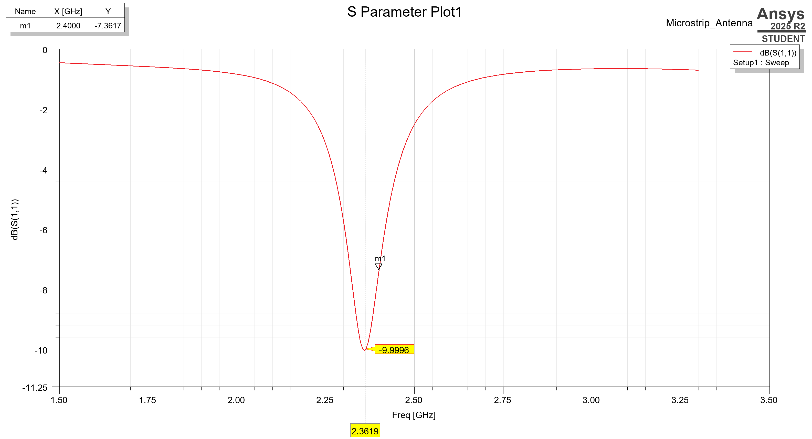
S(1,1) return loss — −9.9 dB resonance at 2.36 GHz
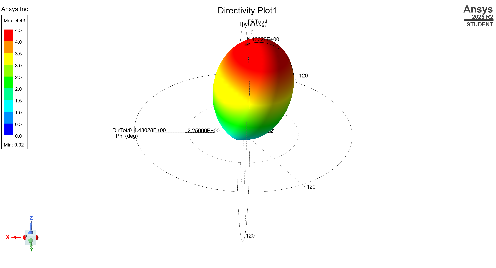
3-D directivity pattern — 4.43 dB max broadside radiation
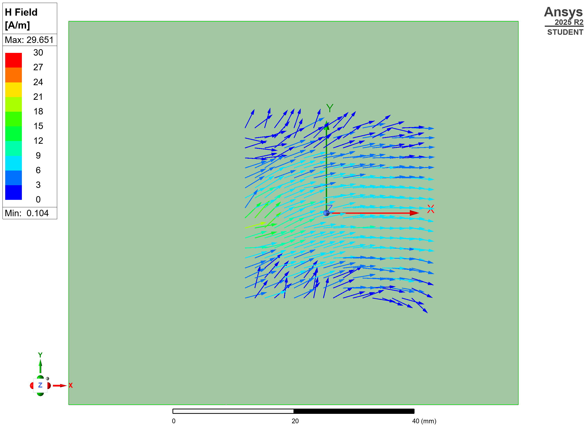
H-field vectors on the patch surface at resonance